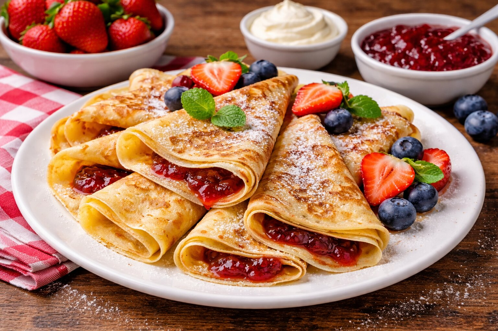

Suroviny
- 250 g hladkej múky
- 2 vajcia
- 300 ml mlieka
- 1 lyžica cukru
- 50 g masla
- Džem alebo tvaroh podľa chuti
Postup
- Múku, vajcia, cukor a mlieko zmiešame na hladké cesto.
- Necháme 15 minút postáť.
- Smažíme tenké palacinky na panvici.
- Plníme džemom alebo tvarohom podľa chuti.